和風ダークファンタジーMMORPG
あなたは死んだのではない。
一度目の人生を終了しただけだ。
転生、寿命、徳、罪、記憶。
すべてが管理される冥府で、あなたは世界の正体を知る。
登録は無料。登録せず端末の記録で入庁することもできます。
死後に知る。生前こそが地獄だった。
人は死ぬと「地獄庁」へ送られ、生前の行いを審査される。
罪を償い、徳を積み、転生許可証を得た魂だけが、再び現世へ戻れる。
頂点に立つのは閻魔大王——ゆえに人々はこの役所を「閻魔庁」と呼ぶ。
あなたは第七審査区「賽の森」に着任したばかりの新入り。
迷える魂を成仏させ、徳を積み、転生審査を目指す。
業龍を鎮めた魂は海を渡り、第二章の拠点「輪廻の都」で冥職を選ぶ。
……だが、この世界には時々「ほころび」が見えるという。
[系統] 徳パラメータ更新…記録完了 ▮
迷える魂が彷徨う担当区域。宿場町を拠点に、試練の洞窟、竜の洞窟へ。最深部にはゴウリュウが巣くう。
白い石畳と蓮池が広がる第六審査区の都。四つの印から冥職を選び、新たな役目を魂に刻む。
役所らしからぬ「系統メッセージ」、記憶がループする魂。この世界の正体に気づいた者は、まだいない。
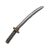
迷える魂をクリックで自動攻撃。破魔・回向・業火の三つの印を使い分け、AUTOで自動戦闘も。倒した魂は成仏し、徳になる。
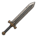
武器・頭・胴・腕・足・飾りの6部位。鍛冶屋カナヤマで強化巻物を使えば+9まで鍛えられる。失敗の緊張感も本格派。
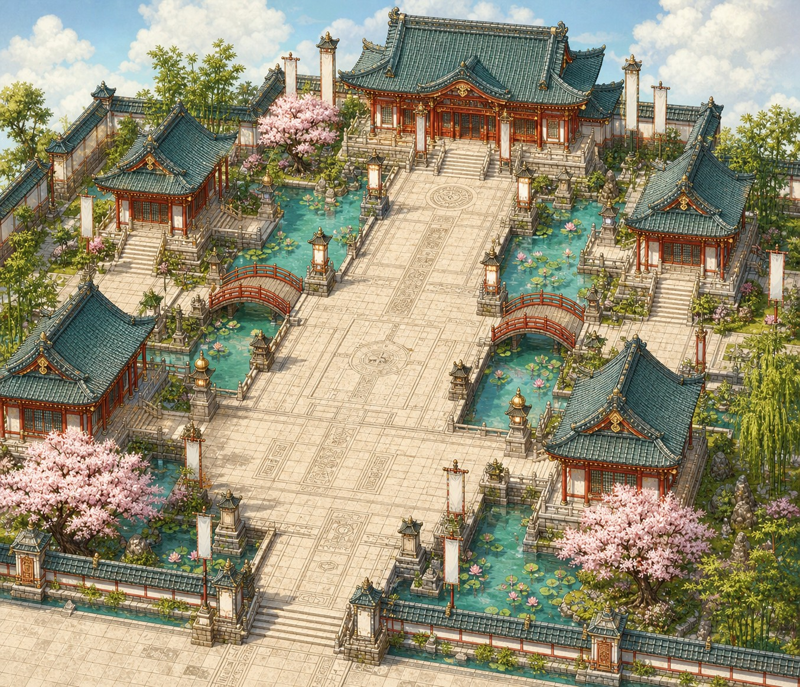
第一章を越えた魂は輪廻の都へ。冥職「羅刹」を男女とも開放し、昼3時間・夜1時間の冥界が一日6巡する。
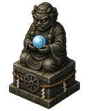
魂籍(無料)に入れば記録は端末を越えて残り、同じ森に他の魂の姿が見える。付近の魂とのチャットで言葉も交わせる。
Safariで enmacho.com/play.html を開き、共有ボタン(□に↑)→「ホーム画面に追加」。 以降はホームに現れる閻魔庁の御殿アイコンから起動すると、Safariのバーが消えた 全画面のアプリとして遊べます。画面が広く、誤タップも減る一番おすすめの遊び方です。
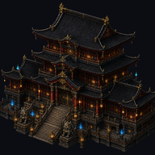
ゲーム内の設定(⚙)にある「⛶ 全画面で遊ぶ」を押すと、ブラウザの枠が消えて 全画面になります。もう一度押せば元に戻ります。AndroidはChromeのメニューから 「ホーム画面に追加」でもアプリのように遊べます。
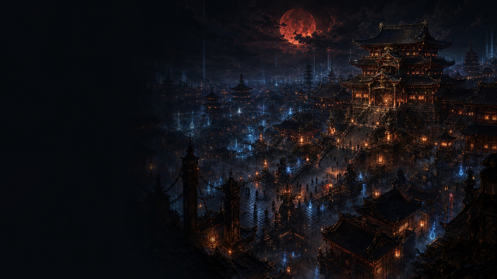
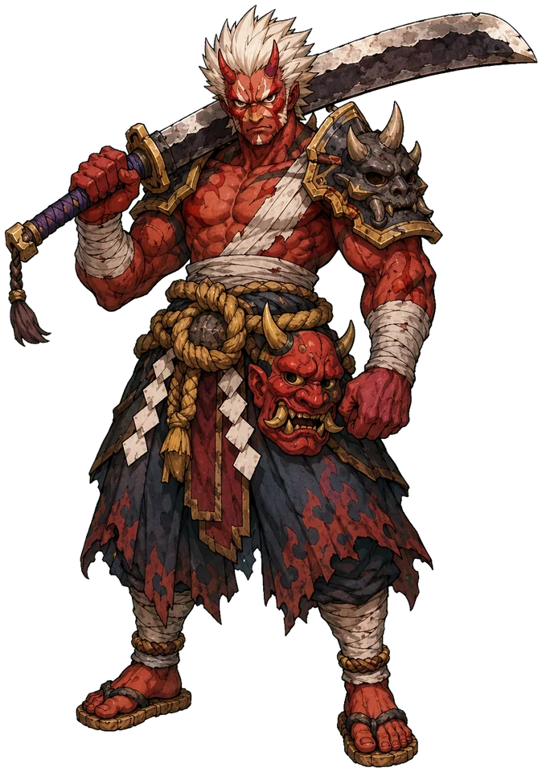
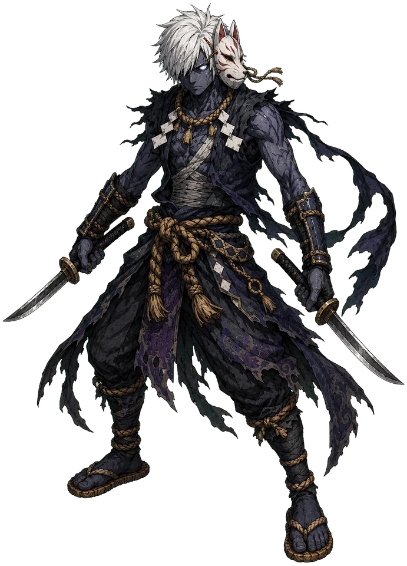
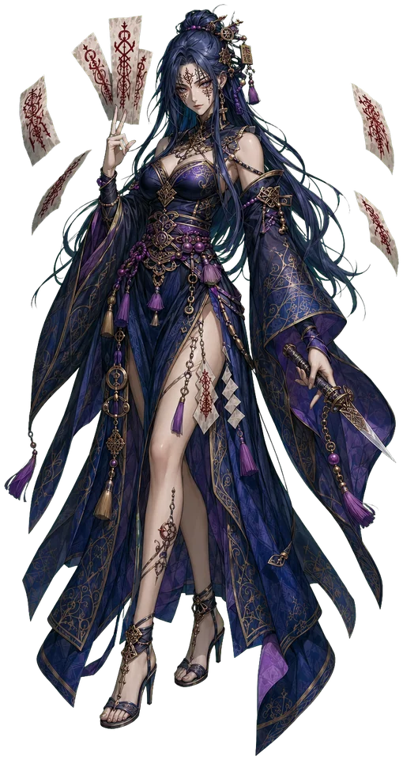
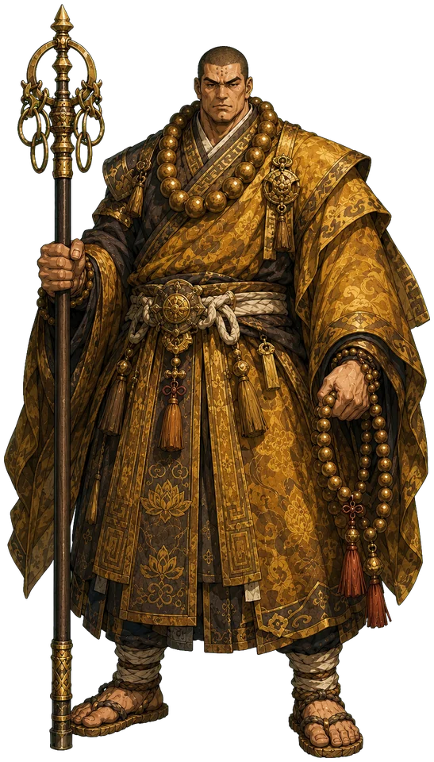
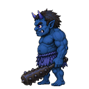
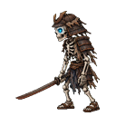
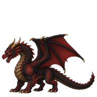
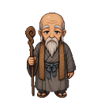
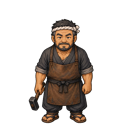
審査区の最深部に至った魂の前で、主たちの因果が顕現する。
▶で開幕の一幕を見よ。
— 顕現のあとに紡がれる「因果の言葉」は、戦いの中で —
渡し船の先に輪廻の都を追加。男女の冥職「羅刹」と、現実時間に同期する昼夜を実装。
付近の魂と話せる一般チャンネル。頭上に吹き出しが出る。フレンド・チームは準備中。
魂籍(アカウント)とクラウド記録、同じ森に他の魂が見える現世同期。enmacho.comで正式公開。
地下5階の竜の洞窟を追加。鍛冶屋カナヤマの強化巻物で武器・防具を+9まで。AUTO戦闘も。
町が倍に拡張、開閉式の門と高札クエスト。酒場のまかない飯には不思議な効能がある。
装備が6部位に。地下3階の試練の洞窟と、深層の魂たち。
第七審査区「賽の森」が業務を開始。魂の受け入れを始める。